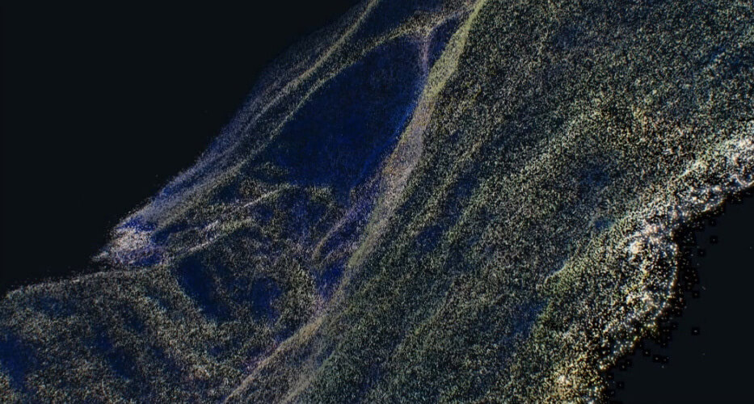
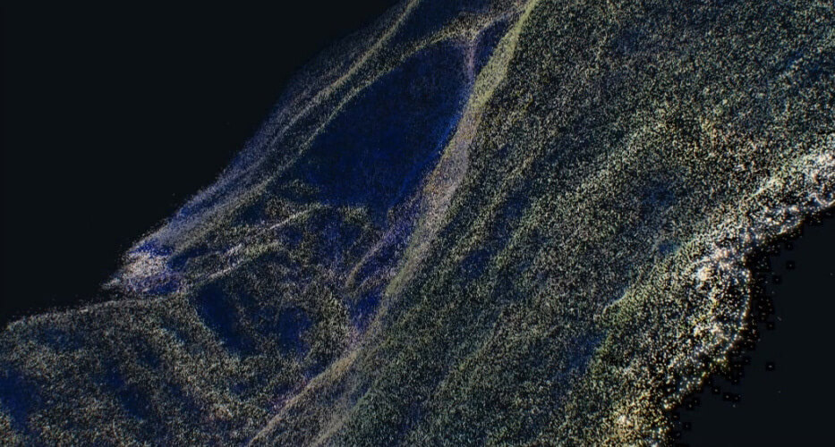

蔡健雅 列穆尼亞 2016 台北演唱會 [Tanya Chua - LEMURIA Tour 2016] 是我在 叁式 實習時參與製作的正式專案。
參與的內容是與另一名實習夥伴利用空拍機蒐集空拍機拍攝的素材 (Footage)，透過攝影測量術 (Photogrammetry) 從而建立 3D 虛擬場景至演唱會互動視覺中。
從實習開始，得知我們要一起參與這個專案，感到十分興奮卻也感到時間緊迫，因為實際上工作期程只有兩個月不到的時間可以實作。
而如同上文所述，我們主要的負責項目是利用空拍機蒐集各項的實景素材，因此我們到了陽明山的小油坑、擎天崗，新北市金山的不知名工廠廢墟、九份的陰陽海和電廠，甚至遠至離島澎湖，從知名的石滬、七美嶼、西嶼⋯⋯大大小小的島嶼，跋山涉水只為找到適合的場景，能呈現團隊一開始的設定。


我們負責製作的 3D 場景，將用在「異類的同類」這首歌。〈異類的同類〉的腳本場景設定一開始是從荒原一步步發現人類曾經存在過的痕跡。為了呈現這樣的場景和視覺效果，團隊利用 Photogrammetry 攝影測量術，使用空拍機拍攝素材後，再透過特殊合成與 3D 軟體建構為 3D 的地景。
蒐集完各式各樣的素材後，由於素材皆是影音檔，我們必須將素材影片中，場景的形狀較為完整、突出的畫面一格一格截圖下來，再進入利用攝影測量術呈現的 Point Cloud 視覺效果的程式，算圖 [render] 出來看看效果是否勻稱、完美。所以光是拍攝期就花了非常多的時間與心力，拍完現場就馬上利用電腦測試。


 
